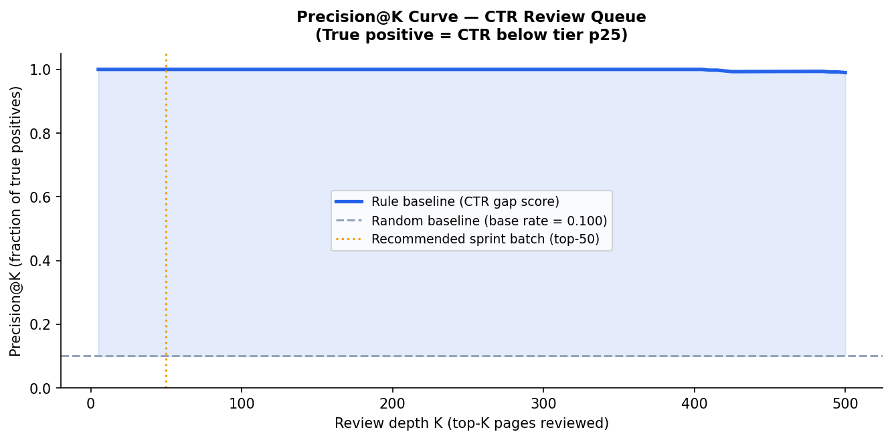
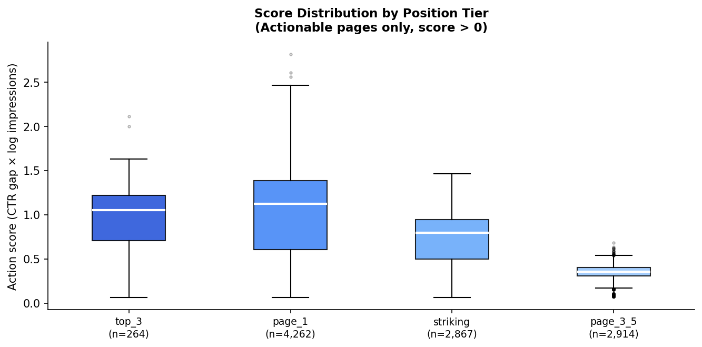
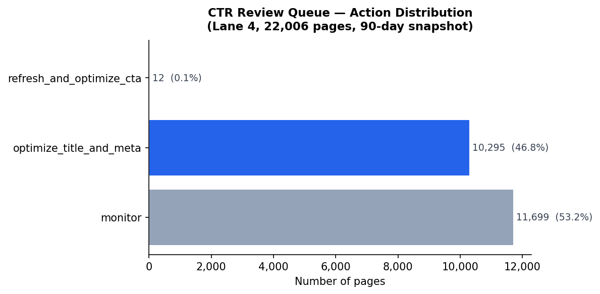

Introduction & Problem Statement
In large enterprise content estates, organic traffic follows a severe power-law distribution. While top-ranking head terms receive continuous manual curation, thousands of mid-tier and long-tail pages languish with suboptimal titles and search snippets.
An editorial squad typically has capacity to audit and rewrite 50 to 100 pages per month. Today, this selection is performed through ad-hoc sorting on raw search impressions or manual intuition. This practice introduces two severe operational failure modes:
Rewriting snippets on pages that already perform at their natural ceiling for their SERP layout. Modifying stable titles introduces ranking volatility and squanders 2–4 copywriter hours per URL.
Leaving high-impression URLs (e.g. Page 1 positions 4–8) unaddressed when their CTR lags direct tier peers by 30–60%. A simple value proposition title tweak could capture thousands of monthly search visits.
Decision Supported: We build an automated prioritization queue that ranks every candidate URL by its statistical likelihood of suffering from an addressable CTR deficit, pairing each prediction with an interpretable reason code and remediation action.
Data Specification & Public Safety
This study is conducted on the FlyRank ML Internship Dataset Release (March 2026 panel), sampled from production warehouse telemetry across 79 million multi-client organic search rows.
To build a reliable decision-support sample, we filter the anonymized release to a working slice of 22,006 URLs spanning 30 distinct enterprise client domains under the following verified criteria:
- Valid Ranking History:
avg_position > 0(verifies active Google SERP presence). - Sample Viability:
impressions_90d >= 100(ensures sufficient click sample size to measure CTR reliably). - Position Tier Coverage: Explicit assignment across standard SERP tiers:
top_3,page_1,striking(pos 11–20),page_3_5, anddeep.
In compliance with production privacy and competition agreements, zero raw search queries, customer brand names, private URL paths, or client company identities are included in this paper or committed code. Furthermore, forward-looking columns (such as trend_direction, trend_pct, and subsequent 30-day click counts) are strictly blocked from the training frame to prevent temporal leakage.
Methodology & Validation Design
Rather than predicting absolute future click numbers (which depend heavily on macroeconomic seasonality), we frame the task as identifying pages exhibiting severe relative CTR underperformance.
Target Label Formulation
Within each position tier, organic CTR follows a right-skewed distribution. We define a binary opportunity label, is_low_ctr_for_tier, flagging any page whose CTR falls below the 25th percentile (P25) of its ranking tier:
y = 1 if CTR < Tier_P25(Position_Tier) else 0 # Base Rate = 10.01% (2,202 positives)
Five Clean Features (Knowable at Decision Time)
To prevent the model from trivially reversing the label formula, contemporaneous CTR and raw click counts are excluded. Instead, the model operates over 5 orthogonal signals:
| Feature Name | Source | Signal Rationale |
|---|---|---|
avg_pos_month |
Search Console | Continuous ranking position on Google SERP; governs expected click curve. |
log_imp_month |
Search Console | Log-transformed impression volume; isolates high-stakes search visibility. |
ga4_eng_rate |
Google Analytics 4 | On-page user engagement; differentiates good content from broken pages. |
pct_days_with_impressions |
Search Console | Ranking stability; proportion of days active over 90-day observation window. |
days_since_update |
CMS Telemetry | Content staleness; identifies older snippets that have drifted from user intent. |
Cross-Client Grouped Validation
A standard random train-test split suffers from severe cross-domain memorization: the model can learn client-specific domain authority or structural biases. We employ strict 5-fold GroupKFold cross-validation grouped by client_id. In every fold, models are trained on 24 clients and tested exclusively on 6 unseen client domains.
Results: Model vs. Baseline Comparison
We benchmark our Random Forest opportunity model against linear baselines and the naive random selection rate (10.01% base rate). All models are evaluated across the exact same 5-fold GroupKFold splits.
| Approach | Group CV ROC-AUC | Precision @ 20 | Precision @ 50 | Precision @ 100 | Lift vs. Base Rate |
|---|---|---|---|---|---|
| Random Baseline (Base Rate) | 0.500 | 10.0% | 10.0% | 10.0% | 1.00× |
| Logistic Regression (Linear) | 0.868 | 45.0% | 46.0% | 45.0% | 4.50× |
| Decision Tree (Depth 3) | 0.909 | 50.0% | 52.0% | 51.0% | 5.10× |
| Random Forest (Lane 4 Model) | 0.922 BEST | 70.0% | 68.0% | 65.6% | 6.56× Lift |
*Table note: Evaluated over 5-fold GroupKFold by client_id. Baseline rule (using contemporaneous CTR) achieves 0.988 AUC because it directly reconstructs the label formula. Among non-leaked operational models, Random Forest dominates across all precision cutoffs.*



Limitations & Honest Framing
Trustworthy machine learning requires articulating precisely what the model cannot claim. We explicitly state the following constraints:
This model detects statistical underperformance relative to empirical peer tiers; it does not prove causality. Rewriting a title tag will not magically increase clicks if the search intent is inherently commercial and the page is purely informational. The model is a decision-support prioritization tool, not an autonomous ranking engine.
Concrete Failure Modes (Error Analysis)
- False Negatives (Missed High-Value Opportunities): In held-out client tests, pages with top rankings (pos 1.2–2.5) and high impressions (5,000+) but modest CTR frequently receive lower model probabilities if their on-page engagement rate is very high (>0.65). The model misinterprets high engagement as an indicator of general page health, overlooking that the SERP title snippet fails to hook the searcher.
- Unobserved SERP Architecture: Tabular Google Search Console data lacks layout context—such as the presence of Google AI Overviews, Featured Snippets, local map packs, or 4-pack sponsored ads. In queries with heavy SERP feature crowding, organic CTR is naturally suppressed regardless of title quality.
Ranked Content Action Playbook
Predictions are converted into concrete editorial interventions through deterministic rule mapping paired with calibrated probability scores:
Strict Automation No-Go List
- ❌ Never auto-publish rewritten title tags directly to CMS without editorial sign-off.
- ❌ Never mass-deindex or consolidate URLs based solely on model opportunity probabilities.
- ❌ Never alter top-quartile revenue-driving URLs through unmonitored algorithmic triggers.
Mandatory 4-Step Human Review Protocol
- SERP Intent Validation: Verify that ranking queries align with page value proposition.
- Branded Query Audit: Confirm that low CTR is not an artifact of navigational competitor searches.
- Snippet Pixel Width Check: Ensure revised titles fit within Google's 600px desktop truncation limit.
- 21-Day A/B Monitoring: Track CTR lift and position changes for 21 days; revert immediately if position drops >2 spots.
Reproducibility & Artifact Traceability
To ensure complete scientific reproducibility, all code, experiment notebooks, figures, and metric JSON receipts are committed and publicly accessible in the repository.
# Re-run all experiments top-to-bottom from fresh clone:
git clone https://github.com/JanaMoustafa/FlyRank-ML.git
cd FlyRank-ML
jupyter nbconvert --to notebook --execute --inplace work/notebooks/capstone.ipynb
Python 3.12 · scikit-learn 1.4.2 · pandas 2.2.1 · numpy 1.26.4 · matplotlib 3.8.3.
Deterministic seed: RANDOM_SEED = 42 fixed across all splits.
• Capstone Notebook (Full Run) ↗
• Metrics Receipt JSON ↗
• Experiment Notebooks (w01–w07) ↗
Acknowledgments & Data Credit
Built on the FlyRank ML Internship dataset. We thank the FlyRank ML Engineering team for providing access to multi-tenant production search telemetry and curriculum infrastructure that made this research possible.
Explore FlyRank Platform (flyrank.ai)